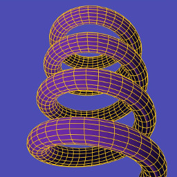
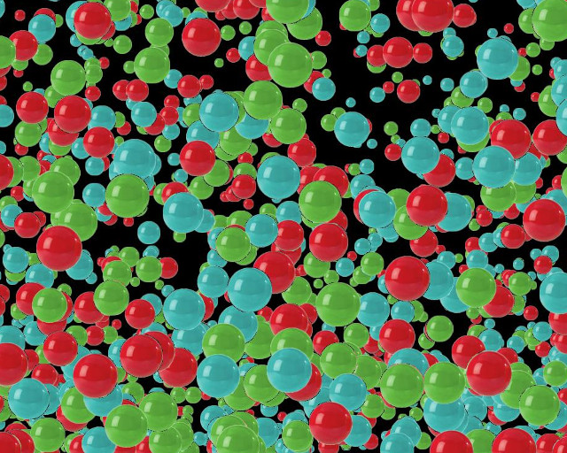

Lines, Points and Merging¶
In the chapter introducing 3D graphics I described the process of setting up the “attribute array” of vertex information and the “element array” essentially specifying how the vertices define the triangular faces. I then passed quickly over the details of how the OpenGL function glDrawElements() is called to draw the shape. In actual fact this function needs to be told what kind of elements to draw, not just GL_TRIANGLES but also GL_POINTS, GL_LINE_STRIP, GL_LINE_LOOP, GL_LINES, GL_TRIANGLE_STRIP, GL_TRIANGLE_FAN work, each of which interpret the element array differently.
In pi3d.Shape there are two methods that allow switching between triangles (the default) and points or lines.
set_line_width and set_point_size¶
Have a look at the source code of pi3d/Shape.py around line 420 and you will see that it is a relatively simple process of calling the OpenGL function glLineWidth() and changing the Buffer property draw_method. If the argument closed is set to True then the line will loop from the last point back to the first, If the width is set to zero then the draw_method will revert to triangles. The set_point_size method above it is slightly simpler as there is no OpenGL function to set a global point size, rather the size is passed to the vertex shader as a uniform variable Buffer.unib[8]. This is then scaled with distance so that a point is the size specified at one unit distance from the camera, half at two units, third at three units etc. (Have a look at any of the standard vertex shaders to see how this is done). Lines are always the same width however near or far away.
Now open linepoint01.py [1] and try toggling between triangles, lines and points using the t, l and p keys. Check out the effect of using a flat shader or lighting dependent shader and the related effect of using uv texture mapped shader. Try the pi3d.Lines object; one thing you will find with this is that only the mat_flat shader works as expected. This is because the Buffer attribute array doesn’t have normals or texture coordiates. There is also a pi3d.Points class which is very similar.

You might also notice with many of the standard shapes drawn as lines with the “strip” argument to set_line_width set True, that though the majority of the lines define quadrilaterals there are some quads that have an additional diagonal line. In fact, it might seem logical for all the diagonals to show, after all, that’s how the triangles are represented when the 3D shapes are drawn as solid objects. However if the order of vertices used in the element buffer is defined carefully the line drawing can be made to (mainly) follow the edges. In the diagram, for instance, the triangles are defined as [(0, 1, 2), (2, 3, 0)] which when used to define a line is interpetted as 0=>1 1=>2 2=>2 2=>3 3=>0 i.e. going round the outside. In earlier versions of pi3d the triangles may have been defined as [(0, 1, 2), (0, 2, 3)] which would have produced a line with the diagonal drawn twice and the edge from 3=>0 missing!
In the above example the line drawing is what would happen using GL_LINE_STRIP which is the default behaviour of set_line_width. If the argument “strip=False” is used then the draw method is GL_LINES and this interprets the elements as a series of pairs defining each end of a series of lines. The result would then be 0=>1 2=>2 3=>0 i.e. only the first and last edge would be drawn, which you will have seen when you tried the experiments suggested in linepoint01.py. Generally the edges will be drawn more completely using the default “strip=True” however for standard shapes created with Shape.lathe() (i.e. most of them!) the faces fit together to fill in the gaps. Also for models loaded from obj files there is a tendency for extra edges to appear joining the scattered faces and these often look better using “strip=False”.
It might occasionally be nice to be able to draw a 3D object as a solid, with directional lighting then overlay lines defining the edges of its faces. However there are two problems with this: 1. As we have seen in the linepoint01.py example we would need two shaders to do it nicely 2. The lines will be exactly the same distance from the camera as the edges of the faces they outline so there is likely to be z-fighting [2] or partial obscuring of lines as the object rotates.
There are at least three ways of tackling this problem. One might be to make a Shape with two Buffers, the first using GL_TRIANGLES with mat_light shader, the second Buffer being a duplicate of the first but using GL_LINES and mat_flat shader. Ideally the second Buffer would be scaled up slightly so the lines were always drawn outside the solid version. As scaling can be more easily done for a whole Shape it might be easier to achieve the same result by using two Shapes, rather than Buffers with the second Shape a child of the first one. (Look at the TigerTank.py demo to see how child objects can be used to conveniently join Shapes together but allow them to be moved relative to each other). In linepoint02.py [3] I use a technique of drawing the object twice each frame, once as a solid then as a wireframe. I use the Camera transformation matrix to move the shape slightly towards the view point between each draw. [4]
The third example in this chapter linepoint03.py [5] introduces the pi3d.MergeShape class. This class can be used to combine several Shape objects into one with the advantage that only one draw() call will then be needed. For a large number of objects, such as the trees in the ForestWalk.py demo, this will make a very significant reduction in the (slow) python side matrix multiplication. As well as merge() used here, MergeShape has two other methods: radialCopy() which can be used to produce regular patterns (see pi3d_demos/Blur.py) and cluster() which is used to “scatter” objects randomly onto an ElevationMap, (see pi3d_demos/ForestWalk.py).
Points using texture mapping¶
Finally, in the chapter on ‘Cameras, 2D projection and Sprites’ I referred to an alternative sprite drawing method using points, for fast rendering when the numbers get big. Open up the demo pi3d_demos/SpriteBalls.py There are several features of this demo that use numpy to do the bounce and movement calculations on large arrays of vertices, I won’t attempt to explain any of that here but I do recommend trying to get to grips with this in the longer term. For the moment it is sufficient to understand that the sprites are represented by the vertices of a Points Shape and that the z location is being used to represent the size of each point (see lines 52 to 54, you can also see that the color is defined using the normal x component on line 61). Each frame the vertices move according to “physics” and the locations are revised using the Buffer.re_init() method (line 84) and the points are drawn using a special shader. Now look at the shaders pi3d_demos/shaders/uv_sprite.* (.vs and .fs)
In the vertex shader you will see that it simply sets gl_Position in the normal way using the projection matrix (as neither the Shape nor the Camera move, this matrix multiplication could have been eliminated by using a different basis for the vertex coordinates). And the gl_PointSize is set to be inversely proportional to z depth. In the fragment shader a Texture2D lookup is performed on the texture loaded in SpriteBalls.py, however rather than using a 2D vector calcualted from the texture coordinates (which are not passed to the shader when using the Points class anyway), it uses gl_PointCoord, a variable available in the fragment shader while drawing points. To get an idea of the increased speed of this type of rendering try increasing MAX_BALLS to several thousand as used for the image above.
| [1] | https://github.com/paddywwoof/pi3d_book/blob/master/programs/linepoint01.py |
| [2] | https://en.wikipedia.org/wiki/Z-fighting |
| [3] | https://github.com/paddywwoof/pi3d_book/blob/master/programs/linepoint02.py |
| [4] | In this case the camera isn’t moving so a simple translateZ() by a fixed small amount would have sufficed, however the technique used in the example can be used more generally. |
| [5] | https://github.com/paddywwoof/pi3d_book/blob/master/programs/linepoint03.py |